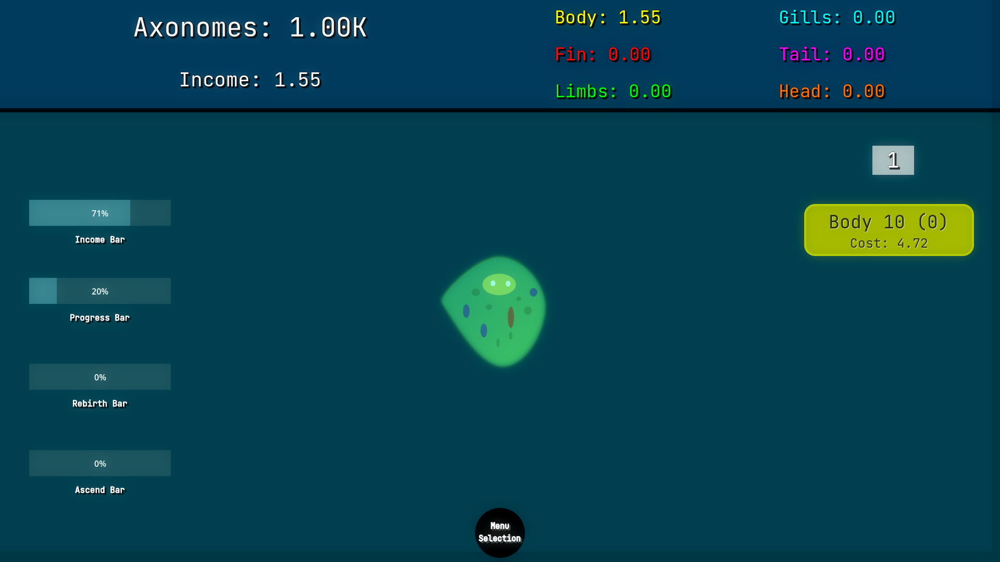

An idle game about transforming an axolotl cell into the ultimate biogentic axolotl form! In Axomorph Idle, you start off with a cell, using Axonomes through idling to upgrade the Axolotl cell into an actual baby. Go through the stages of baby, toddler, kid, until you finally get a fully fledged adult Axolotl! Unlock upgrade for specific parts of the axolotl, different axolotl forms, and eventually different stages to fully develop your axolotl into the most powerful one in existence!
Gameplay Beginning!

Major stages of the game:
- Growth: Evolve your axolotl from a cell to a full adult.
- Parts: Part of Growth, Specialize your evolution by upgrading specific limbs and features.
- Rebirth: Reset your full adult axolotl into new unique and rare forms
- Finally, Ascend your maximum form to gain new benefits, rare challenges, and unique progression.
Major features:
- Offline Progress
- Safe storage in a database
- Idle progression
- Cute but Indie Graphics
- Developed UI with lots of fancy numbers
- Stats and Achievement Pages for flexing
- Fun and developed progression!
AI Policy:
I'm pretty open about AI, I think that it's a great tool for learning, but doesn't replace hard work. So I'll list what I used it for. I only used it to help me learn how to do stuff, such as Godot, creation of the database, and signing for windows. I did not make any assets with AI, and after learning, the only thing I used it for is small ideas and small script errors, tho it normally sucked at finding them so.
Developer Notes:
Overall I really enjoyed making the game, and while it wasn't perfect, it was a great learning experience for me to learn video game development, and about technologies such as databases and signing I didn't know how to use before. Hope you enjoy playing the game.